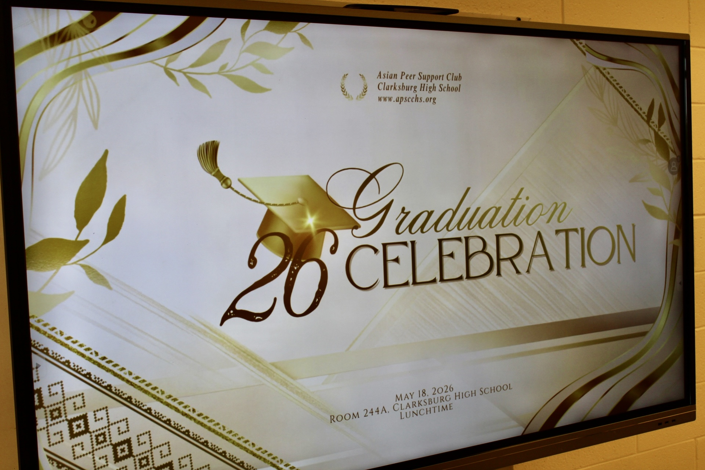
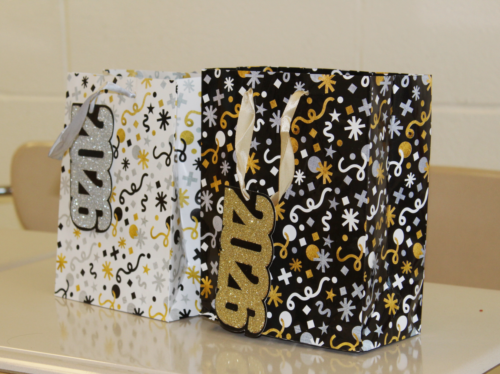

APSC Graduation Party 2026

Celebrating Our Graduates
On May 18, 2026, the Asian Peer Support Club gathered in Clarksburg, Maryland to celebrate an extraordinary milestone: the graduation of our Class of 2026. This special event brought together members, supporters, and our graduating seniors to honor their remarkable high school journey and the bonds we've formed throughout the years. In a warm and joyful atmosphere, we celebrated their achievements and reflected on the meaningful memories created together. This graduation party served as a beautiful farewell to our graduating members, marking the end of their high school chapter and the beginning of their exciting new adventures ahead.


Food, Laughter, and Unforgettable Moments
The heart of our celebration was filled with delicious food and refreshing beverages that brought everyone together. From appetizing dishes to sweet treats and refreshing drinks, every element was carefully chosen to create a festive and memorable atmosphere. As our graduating members enjoyed the food and drinks, the air was filled with laughter, heartfelt conversations, and the warmth of community. We shared stories, took photos, and created countless memories that will last a lifetime. This celebration was not just about the food—it was about coming together as a family to honor our graduates and cherish the special bonds we've built. We are deeply grateful for everyone who joined us in making this day truly special and unforgettable for our Class of 2026.